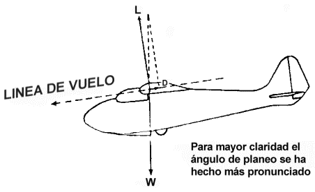
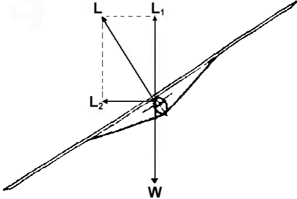
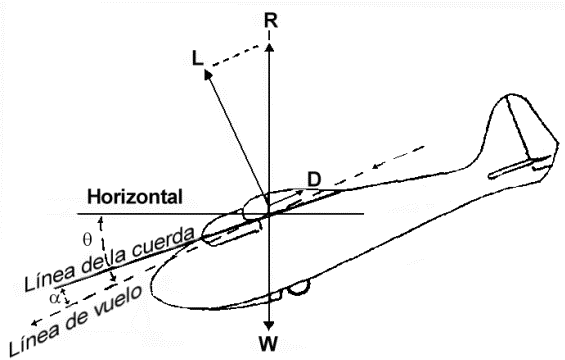
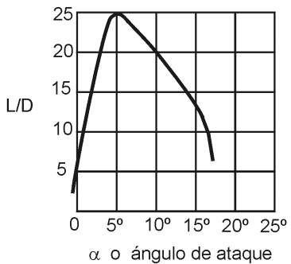

Teoría de Vuelo para Pilotos de Planeador
Stafford Allen
Capítulo IV
EL ALA EN EL PLANEADOR
VUELO NIVELADO (equilibrio)
Ahora
permítasenos volver nuestra atención a un planeador completo. El instructor de vuelo nos
habrá mostrado los tres controles básicos del planeador y cómo operan, de tal manera
que no necesitamos entrar aquí en grandes detalles, pero hay uno o dos
términos que usaremos, los cuales requiere una pequeña explicación.
Los
pedales controlan el movimiento de la máquina hacia los costados. Si presionamos el pedal
derecho la nariz del planeador se dirige a la derecho y viceversa. Los alerones controlan
el movimiento de la máquina sobre su eje longitudinal, el cual se denomina rolido. Si llevamos la palanca hacia la derecha la máquina rola hacia
la derecha. El timón de profundidad controla el ascenso o descenso de la máquina.
Llevamos la palanca hacia adelante y la máquina pica, es decir, baja la nariz.

El
planeador vuela a una velocidad constante en línea recta por lo cual todas las fuerzas
que actúan sobre el mismo deben estar exactamente equilibradas en todas direcciones. No
deberá haber ningún desequilibrio, en ninguna dirección. Esto nos lleva a la
desagradable conclusión de que la sustentación es ligeramente menor que el peso, debido
a que la resistencia está actuando ligeramente hacia arriba. En la práctica es una
diferencia tan pequeña que la podemos despreciar y considerar que sustentación es igual
a peso, pero debemos reconsiderar esto cuando se trata de situaciones de vuelo distintas a
la de mejor ángulo de planeo.
Hay otra condición que debe ser
satisfecha si el planeador ha de permanecer en equilibrio. Es la de que todas las fuerzas
actuando al mismo tiempo no deben producir un momento de cabeceo que tienda a hacer elevar
o bajar la nariz. En la figura 6 las fuerzas han sido cuidadosamente dibujadas de tal
manera que todas ellas se encuentran en un punto y no hay momento de cabeceo. Esto es
engañoso y por eso hemos hablado de una situación ideal. Si la sustentación actúa por
delante del CG la nariz tenderá a subir y viceversa. Esta situación ideal raramente se
logra en la práctica, y si no se logra debemos procurar una fuerza que equilibre la
situación -hacia arriba o hacia abajo- la cual debe ser provista por las superficies de
cola. Vale la pena tratar de llegar lo más cerca posible del ideal porque la provisión
de una fuerza de equilibrio en la cola involucra alguna resistencia extra y toda
resistencia es algo que debernos tratar de evitar. Sin embargo, desde que el Centro de
gravedad del planeador variará con los distintos pilotos, y el centro de presión -el
lugar donde actúa la sustentación- también se mueve, resulta claro que no es fácil
asegurar que pueda lograrse una situación ideal. Desde un punto de vista práctico es
preferible que la sustentación se halle ligeramente por detrás del centro de gravedad,
ya que un planeador con tendencia a bajar la nariz es mucho más seguro que otro que
tienda a cabrear y entrar en pérdida a la menor oportunidad.
Esta
variación en el peso no es muy grande en la mayoría de los planeadores (excepto en el
caso de lastre de agua); sin embargo puede ser apreciable en el caso de un biplaza, el
cual puede ser volado con dos personas o con una sola. No obstante, tendemos a considerar
la velocidad de pérdida de un planeador en particular como una velocidad fija. Esto
depende del tipo de planeador, por supuesto, desde que el diseñador puede haberse
decidido por un ala muy grande en relación al peso total, es decir, por una baja carga
alar. En este caso, debido al ala muy grande llegaremos al ángulo de pérdida a una
velocidad muy baja porque hemos visto anteriormente que la sustentación también depende
de la superficie alar. Si tenemos un ala pequeña y una gran carga alar, entraremos en
pérdida a una velocidad alta por la misma razón. Adviértase, por ejemplo, que en un
avión de bombardeo pesadamente cargado su velocidad de pérdida cuando despega puede ser
muy diferente de su velocidad de pérdida cuando aterriza, después de haber lanzado unas
toneladas de bombas y consumido todo su combustible.
Lo
que debemos recordar es que el perfil alar o el ala entrarán en pérdida cuando el
ángulo de ataque exceda el ángulo de pérdida, generalmente alrededor de los 15º, y
adviértase nuevamente que este ángulo no tiene nada que ver con la posición hacia
arriba, hacia abajo, horizontal o vertical. Para un determinado planeador este ángulo se
alcanza en vuelo recto y nivelado a la velocidad de pérdida ordinaria.
VUELO ACELERADO
Tal vez el
estado de vuelo en el cual el valor de la velocidad cambia es el más simple, por lo que
permítasenos tratar de este caso en primer lugar. Mucha gente que no sabe nada de vuelo a
vela mira un planeador y exclama: ¿Pero qué es lo que lo hace moverse? No se dan cuenta
de que el planeador no es más que un trineo aéreo y mucha gente puede ver por qué
funciona un trineo que se desliza sobre la nieve. Si usted no puede verlo le sugerimos que
tome un curso de trineo en lugar de uno de vuelo. Pero ocurre que es tan grande la
eficiencia de los actuales diseñadores de planeadores que resulta casi imposible ver que
estas máquinas se encuentran realmente volando en una ligera pendiente.
Veamos
nuevamente la figura 6 e imaginemos que el piloto del planeador baja levemente la nariz de
su máquina. El efecto de esta acción es que las fuerzas de sustentación y resistencia
rotan muy ligeramente en sentido contrario al movimiento de las agujas del reloj. W
permanece sin modificar, de tal manera que el resultado siguiente es que hay una pequeña
fuerza sin equilibrar en alguna dirección, aproximadamente en el sentido del vuelo.
Debido a las leyes del movimiento esta fuerza produce una aceleración y entonces la
máquina aumenta la velocidad. Continuará aumentando su velocidad hasta que las fuerzas
se encuentren en equilibrio nuevamente, y esto tiene lugar cuando la resistencia se
incrementa suficientemente. Luego, la máquina se encuentra otra vez en equilibrio volando
a una velocidad mayor y a un ángulo de planeo más pronunciado. Exactamente lo contrario
tiene lugar si se eleva apenas la nariz. En estos cambios tiene lugar una pequeña
variación en el valor de la sustentación desde que la componente vertical de ambos
-sustentación y resistencia- deben equilibrar W, y también tiene lugar un pequeño
cambio en el ángulo de ataque, debido al cambio de la velocidad.
No tenemos
motor en nuestro aparato, por lo que los cambios de velocidad llevan cierto tiempo,
excepto durante la acrobacia. Los cambios de dirección son otra historia.
Aquí puede ayudamos un ejemplo.
Tomemos un planeador que entre en pérdida en vuelo normal a 70 Km. por hora. A 140 Km.
por hora, si el ángulo de ataque se incrementa hasta llegar al ángulo de pérdida, la
sustentación será de:
1402 / 702 , es decir, 22
o sea
cuatro veces lo que era cuando entraba en pérdida a 70 Km. por hora, porque la
sustentación varía con el cuadrado de la velocidad.
Un
planeador volando en un viraje constante es en algún sentido distinto. Como antes,
requiere una fuerza dirigida hacia dentro del círculo en el cual está volando, pero en
este caso el círculo es horizontal, mientras que en el caso de la salida de la picada el
círculo era vertical. Si tomamos una curva con un auto, esta fuerza hacia dentro es
suplida por la fricción de las gomas sobre el camino. Aun en el caso de un bote, la
fuerza interna puede ser suplida por la presión del agua en los costados, porque el bote
está sabiamente diseñado para ofrecer la menor resistencia cuando se mueve hacia
adelante, pero una gran resistencia al ser desplazado de costado. Esta idea lleva a
algunos a imaginar que un planeador puede virar simplemente moviendo los pedales. Si se
intenta hacerlo el planeador girará hacia un lado, pero desde que la única fuerza
interna que actúa sobre él es la causada por el fuselaje contra el aire, virará muy
lentamente. La resistencia es enorme, como puede esperarse y el resultado -si se trata de
un planeador- es una gran pérdida de altura o de velocidad, o de ambas.

EL EFECTO DE LA VELOCIDAD
En la primera parte de este
capítulo, cuando estábamos discutiendo el vuelo nivelado, vimos que un planeador puede
volar a distintas velocidades. La velocidad menor a que puede volar es la velocidad de
pérdida. La más alta, teóricamente, es su velocidad terminal en una picada vertical,
pero en la práctica pocas máquinas son diseñadas para soportar este maltrato y las
máximas velocidades a las cuales puede volar un planeador son determinadas por los
diseñadores e indicadas en la cabina. Lo que queremos investigar ahora es el efecto de
volar un planeador a distintas velocidades. 
La figura
8 es más o menos una reproducción de la figura 6, con el agregado de algunos detalles.
El planeador está en vuelo recto constante y se encuentra descendiendo en una línea que
diremos forma un ángulo q (theta) con el horizonte. Sabemos por nuestras discusiones
sobre perfil alar que L y D son realmente dos partes de la fuerza resultante R y que si
agregamos L y D juntos, teniendo en cuenta sus direcciones, por supuesto, obtenemos R, la
cual equilibra W (el peso), desde que el planeador está en equilibrio. Este agregado es
lo que hemos hecho gráficamente y la recta LR es, simplemente, nuestro vieja amiga D,
ubicada al final de L. Ahora podemos ver un factor interesante. Desde que L está en
ángulo recto respecto a la línea de vuelo y R está en ángulo recto respecto al
horizonte, el ángulo entre L y R es el mismo que el que hay entre la línea de vuelo y el
horizonte, ángulo al que hemos decidido llamar q. Por lo tanto, la relación L/D es la cotangente de q, para aquellos a quienes gusta la trigonometría. Para quienes no les gusta podemos decir que si el ángulo q es 1 en 10, entonces la sustentación es 10 veces la
resistencia. Si e es 1 en 17, entonces la sustentación es 17 veces la resistencia, y así
sucesivamente. Ahora se advierte que el ángulo de planeo de nuestro planeador simplemente
depende de la relación L/D. Si hacemos L/D más grande, digamos 25, entonces el ángulo de planeo es de 1 en 25, es decir, nuestro planeador volará hacia adelante 25 metros por
cada metro de altura que pierde. Esta relación L/D dependerá del perfil alar particular
que el diseñador ha establecido para nuestro planeador, pero dependerá también del
ángulo de ataque al cual está volando el ala. Si obtenemos la curva de sustentación y
la curva de resistencia (figuras 2 y 3) de este perfil particular y dividimos la
sustentación a cualquier ángulo de ataque por la resistencia a ese ángulo, y repetimos
el proceso para todos los ángulos de ataque, habremos obtenido una curva L/D como se
muestra en la figura 9. Para obtener un resultado exacto tenemos que considerar la
sustentación de todo el planeador: ala, cola, fuselaje, etc., y la resistencia total
cuando se compila esta curva.

Figura 9
Lo primero
que advertirnos de esta curva es que hay sólo un ángulo de ataque -en este caso
alrededor de los 4º- en que obtenemos nuestra máxima relación L/D. En este punto el
valor de L/D es de alrededor de 25, por lo que obtendremos una relación de planeo de 1 en 25. Si a es mayor o menor que este valor, entonces nuestro L/D disminuye
y nuestro ángulo de planeo empeora. Por ejemplo, para a = 10º, L/D = 20,
desde que el ángulo de planeo es de 1 en 20 y también para:
a = 2,5º , L/D = 20, y el ángulo de planeo es 1 en 20.
¿Cuál es
el efecto de un cambio de peso del planeador? Un piloto más pesado significará que hará
falta más sustentación para equilibrar el peso. Si las características del perfil y la
máquina permanecen inalteradas la mejor relación L/D tendrá lugar al mismo ángulo de
ataque, pero desde que se requiere más sustentación, este ángulo de ataque
corresponderá ahora a una velocidad ligeramente más elevada. Vemos entonces que el mejor
ángulo de planeo es el mismo, sólo que se logra a una velocidad del aire ligeramente
mayor que en el caso anterior. Con un piloto más liviano ocurre lo inverso.
Cuando el diseñador crea una máquina de gran penetración o con una alta velocidad, debe
esforzarse por elegir un perfil alar y una configuración para su máquina que hagan que
la curva de la misma sea lo más plana posible en su parte superior y que no descienda
repentinamente. Esto significa que hay una variedad de ángulos de ataque en los cuales el
ángulo de planeo está muy cerca del mejor. Consecuentemente, el piloto dispone de una
amplia gama de velocidades a las cuales puede volar sin tener que recurrir a un ángulo de
ataque que no es el óptimo.
Hay otra
velocidad importante para cada planeador: la de mínima caída. Esta es la velocidad a la cual la potencia requerida para
impulsar un planeador es mínima. Pero se supone que un planeador no tiene una planta de
poder. Sí, la tiene. Está utilizando energía durante todo momento; energía aportada
por el hecho de que desciende en la dirección en que actúa el peso. Los físicos llaman
a esto energía
potencial y la energía potencial de un
planeador se acaba cuando aterriza. Posee una buena cantidad de energía potencial a 1500
metros de altura y el doble cuando llega a los 3000. La potencia que utiliza el planeador
es el régimen de descenso a través del aire. Cuando la potencia es mínima, la caída es
mínima. El planeador aun utiliza energía cuando trepa en una térmica, pero en este caso
la energía está siendo aportada por la fuerza ascendente del aire en el cual vuela el
planeador, por lo que éste tiene una ganancia neta de energía y por esa razón trepa.
Observando
la curva de resistencia (Fig. 3) podernos ceder a la tentación de decir que la
resistencia es mínima en algún punto cuando a = 0º a 2º. No obstante, aquí la potencia debe ser mínima.
Esto es sólo la mitad de la historia porque la potencia es el producto de la resistencia
por la velocidad. Cuando a = 0º la velocidad es elevada; cuando a = 15º (velocidad de pérdida), la velocidad es mínima, pero la
resistencia muy grande. En algún lugar entre estos dos extremos, resistencia por
velocidad es mínima y esa es la velocidad de vuelo para mínimo descenso.
En este libro estamos evitando deliberadamente emplear fórmulas
matemáticas tanto como sea posible, por lo que debemos terminar las consideraciones sobre
este tema advirtiendo que en muchos planeadores la velocidad de mínimo descenso es algo
menor que la velocidad de óptimo planeo. El piloto ha obtenido una indicación directa de
su descenso a través de sucesivos ensayos. Sin embargo, vale la pena hacer notar que un
incremento del peso significa un incremento de la velocidad de mínimo descenso y
viceversa.
Volver Arriba